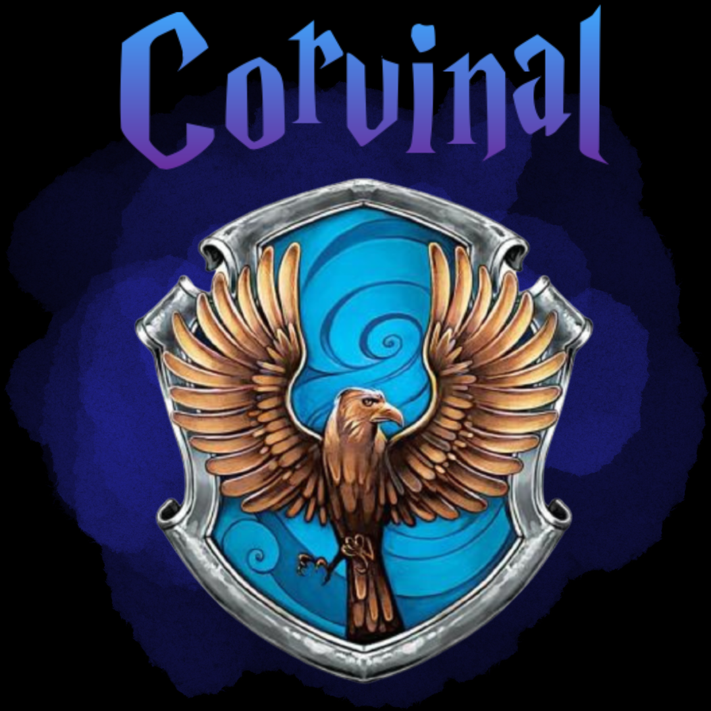
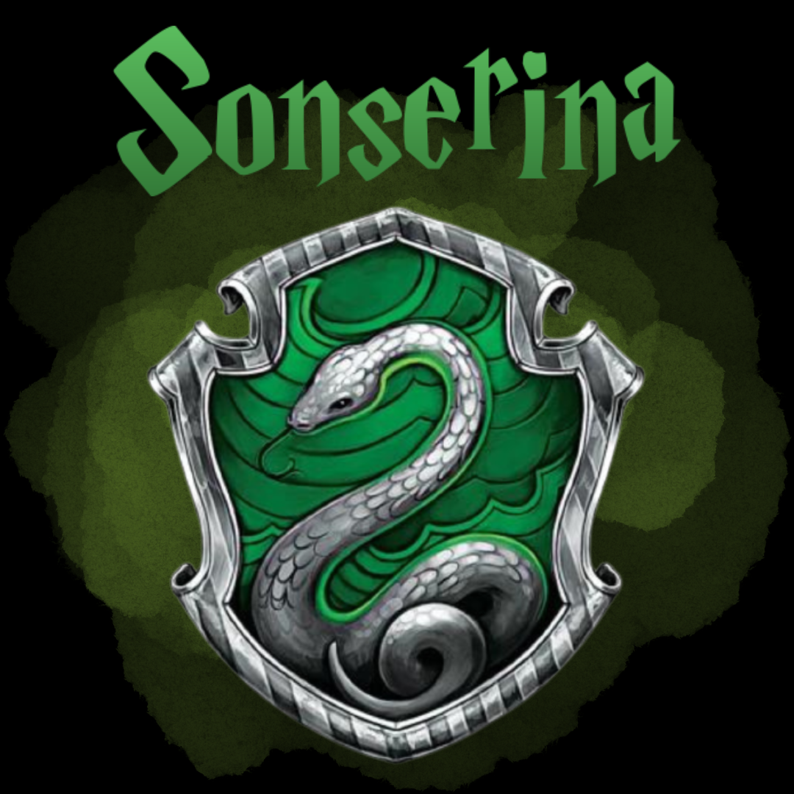

Parabéns, você é da Grifinória!
"Quem sabe sua morada é a Grifinória, casa onde habitam os corações indômitos. Ousadia e sangue frio e nobreza destacam os alunos da Grifinória dos demais."
- Chapéu seletor

Parabéns, você é da Corvinal!
"A velha e sábia Corvinal, a casa dos que tem a mente sempre alerta, onde os homens de grande espírito e saber sempre encontrarão companheiros seus iguais."
- Chapéu seletor

Parabéns, você é da Sonserina!
"Quem sabe a Sonserina será a sua casa e ali fará seus verdadeiros amigos, homens de astúcia que usam quaisquer meios para atingir os fins que antes colimaram"
- Chapéu seletor